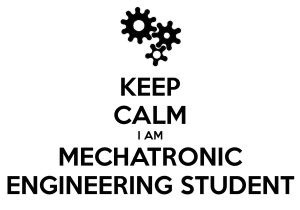

this is Alejandra's website content, you will find some awesome stuff here.
MECHATRONIC ENGINEERING
Mechatronics is a multidisciplinary field of engineering that includes a combination of systems engineering, mechanical engineering, electrical engineering, telecommunications engineering, control engineering and computer engineering.
Mechatronics Engineering program at UNITEC started in July 2004 as the first, new and innovative program in Honduras university level to meet the necessity of a worldwide industry applying advanced technology for manufacturing and production of their goods. The freshmen student from our program should have a detailed explanation of all aspects that are part of the field of mechatronics to open the scope of this field impact.
Robotics is the branch of mechanical engineering, electrical engineering and computer science that deals with the design, construction, operation, and application of robots, as well as computer systems for their control, sensory feedback, and information processing.
The word robotics was derived from the word robot, which was introduced to the public by Czech writer Karel Čapek in his play R.U.R. (Rossum's Universal Robots), which was published in 1920. The word robot comes from the Slavic word robota, which means labour. The play begins in a factory that makes artificial people called robots, creatures who can be mistaken for humans – very similar to the modern ideas of androids. Karel Čapek himself did not coin the word. He wrote a short letter in reference to an etymology in the Oxford English Dictionary in which he named his brother Josef Čapek as its actual originator.


The video below shows how a robot can solve the rubik cube in 6 seconds